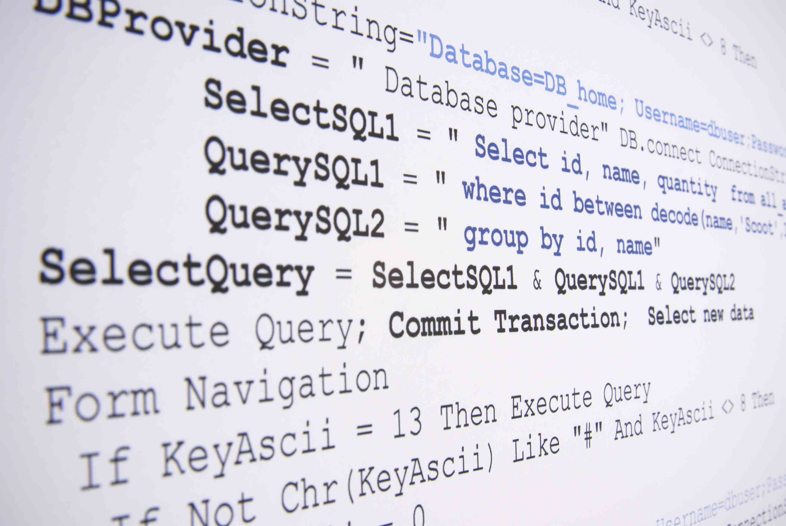

Databases are essential for any size and type organization.
Most used databased use relations to relate different objects (tables) between one another and mantain data integrity.SQL is one popular languge used to set up a database schemas and retriving information from the Database.
